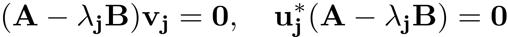
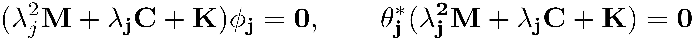
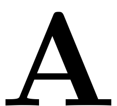
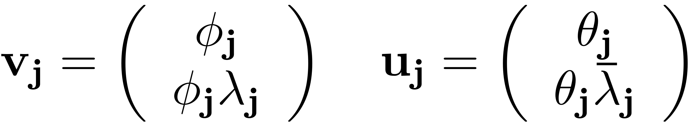
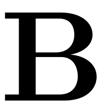
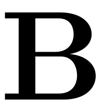
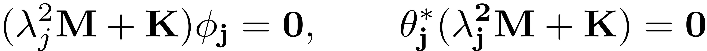
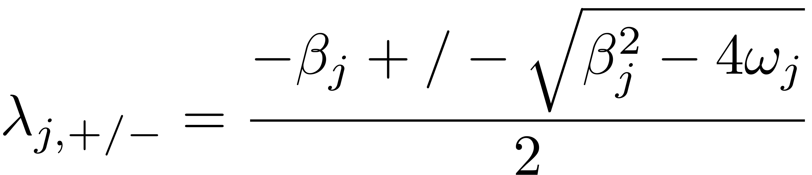
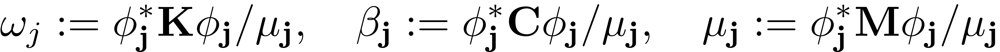
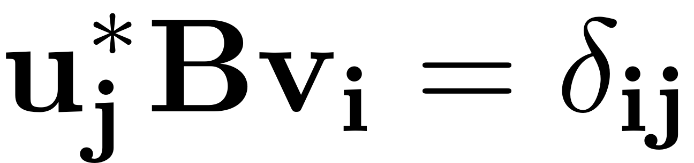

LINEAR SPECTRAL ANALYSIS
Contents
function [V, D, U] = linear_spectral_analysis(obj)
Linear Spectral Analysis
This function performs a (truncated) linear spectral analysis on the linear part of the dynamical system described by the dynamical system object.
For first order systems the eigenproblems which need to be solved read

For second order mechanical systems the eigenproblems which need to be solved read

The choice of  and  when setting up the Dynamical System results in displacement and velocity variables that are are inherently related, such that
when setting up the Dynamical System results in displacement and velocity variables that are are inherently related, such that

For model reduction only few of these eigenmodes have to be computed as explained in more detail in SSM-Theory. Therefore a parameter Nmax is introduced, which allows to compute a reduced set of eigenvectors and eigenvalues. The default for this parameter is set in the Dynamical System Options
If the dynamical system has less degrees of freedom than Nmax, then the full set of modes is computed. Depending on the structure of the system matrix  and , distinct algorithms are employed.
and , distinct algorithms are employed.
if obj.N < obj.Options.Nmax
if ~issparse(obj.A) if norm(obj.B-eye(size(obj.B)))<1e-8 [V, LAMBDA, U] = eig(obj.A); % B=I, CONSISTENT WITH SSMTool 1.0 else [V, LAMBDA, U] = eig(obj.A,obj.B); end else [V, LAMBDA, U] = eig(full(obj.A),full(obj.B)); end
In the case where the full dynamical system is bigger than Nmax only a small subset of the full spectrum and eigenmodes are computed.
else
E_max = obj.Options.Emax; % Number of eigenvalues that are checked for resonances, to guarantee existence of SSM
n = obj.n;
For second order systems that are subject to Rayleigh type linear damping, the damping matrix can be simultaneously diagonalised with the mass and stiffness matrices.
In this case we first compute the eigenmodes for the conservative system

The eigenvalues of the full dynamical system then read

where

if obj.order == 2 && obj.Options.RayleighDamping
disp(['Due to high-dimensionality, we compute only the first ' num2str(E_max) ' eigenvalues with the smallest magnitude. These would also be used to compute the spectral quotients'] ) % Computing undamped eigenvalues and eigenvectors disp ('Assuming a proportional damping hypthesis with symmetric matrices') [PHI, ~, NOT_CONVERGED] = eigs(sparse(obj.K),sparse(obj.M),E_max,'smallestabs'); % Assuming proportional damping for estimating damped eigenvectors LAMBDA = zeros(2*E_max,2*E_max); V = zeros(2*n,2*E_max); % Rearranging eigenvalues for j = 1:E_max mu_j = PHI(:,j).'* obj.M * PHI(:,j); omega2_j = (PHI(:,j).'* obj.K * PHI(:,j))/mu_j; beta_j = (PHI(:,j).'* obj.C * PHI(:,j))/mu_j; fprintf('modal damping ratio for %d mode is %d\n', j, beta_j/(2*sqrt(omega2_j))); lambda1 = (-beta_j + sqrt(beta_j^2 - 4 * omega2_j) ) / 2; lambda2 = (-beta_j - sqrt(beta_j^2 - 4 * omega2_j) ) / 2; LAMBDA(2*j-1,2*j-1) = lambda1; LAMBDA(2*j,2*j) = lambda2; V(:,2*j-1) = [PHI(:,j); lambda1*PHI(:,j)]; V(:,2*j) = [PHI(:,j); lambda2*PHI(:,j)]; end U = conj(V); if NOT_CONVERGED error('The eigenvalue computation did not converge, please adjust the number of eigenvalues to be computed') end if ~issymmetric(obj.K) || ~issymmetric(obj.M) disp('the left eigenvectors may be incorrect in case of asymmetry of matrices') % [W, ~] = eigs(A',B',E_max,'smallestabs'); % we assume here that both eigenvalue problems return eigenvalues in % the same order. end
If other linear damping models are employed, a simultaneous diagonalisation is not possible and the full system has to be numerically analysed. To compute the eigenmodes around a certain eigenvalue magnitude an additional parameter sigma can be set.
else
% right eigenvectors
[V, Dv] = eigs(obj.A,obj.B,E_max,obj.Options.sigma);
if obj.Options.RemoveZeros [V,Dv] = remove_zero_modes(V,Dv); end [Lambda_sorted,I] = sort(diag(Dv),'descend','ComparisonMethod','real'); % further sort if real parts are equal (very close) [Lambda_sorted,II] = sort_close_real_different_imag(Lambda_sorted); LAMBDA = diag(Lambda_sorted); V = V(:,I(II)); % rescale V w.r.t mass matrix if ~isempty(obj.M) for j=1:numel(I) vs = V(1:obj.n,j)'*obj.M*V(1:obj.n,j); V(:,j) = V(:,j)/sqrt(abs(vs)); end end % left eigenvectors if issymmetric(obj.A) && issymmetric(obj.B) U = conj(V); else [U, Dw] = eigs(obj.A',obj.B',E_max,obj.Options.sigma); if obj.Options.RemoveZeros [U,Dw] = remove_zero_modes(U,Dw); end [Lambda_sorted,I] = sort(diag(Dw),'descend','ComparisonMethod','real'); % further sort if real parts are equal (very close) [Lambda_sorted,II] = sort_close_real_different_imag(Lambda_sorted); % make sure reordered Dw is consistent with reordered Dv lambda_left = diag(LAMBDA); neigs = min(numel(Lambda_sorted),numel(lambda_left)); idxcom = 1:neigs; assert(norm(Lambda_sorted(idxcom)-lambda_left(idxcom))<1e-3*norm(lambda_left(idxcom)),... 'Orders for W and V are not consistent'); U = U(:,I(II(idxcom))); U = conj(U); V = V(:,idxcom); LAMBDA = LAMBDA(idxcom,idxcom); end
end
end
After computing the eigenmodes, the results are filtered for stiff or zero valued modes. Furthermore they are sorted and normalised, to ensure that

[V,LAMBDA,U] = remove_stiff_modes(V,LAMBDA,U,obj.Options.lambdaThreshold); if obj.Options.RemoveZeros [V,LAMBDA,U] = remove_zero_modes(V,LAMBDA,U); end [V, D, U] = sort_modes(V, LAMBDA, U); [V,U] = normalize_modes(V,U,obj.B); % check the orthonoramlity of V and W with respect to B numColV = size(V,2); if norm(U'*obj.B*V-eye(numColV),'fro')/numColV>1e-4 warning('V and W are not orthonormal'); end obj.spectrum.V = V; obj.spectrum.W = U; obj.spectrum.Lambda = D; if obj.Options.RemoveZeros fprintf('\n The first %d nonzero eigenvalues are given as \n',length(D)) else fprintf('\n The first %d eigenvalues are given as \n',length(D)) end disp(D)
end
Sort modes:
This function sorts the left and right eigenvectors V and U in descending order of the real parts of the corresponding eigenvalues D. The resulting eigenvectors are also normalized to unit magnitude.
function [V, Lambda, U] = sort_modes(V, D, U) % obtain the eigenvalues as a vector instead of a diagonal matrix Lambda = diag(D); if ~iscolumn(Lambda) Lambda = transpose(Lambda); end % sort eigenvalues in the descending order of real parts, incase of tie by % ascending order of magnitude of imaginary parts [Lambda_sorted,I] = sortrows([real(Lambda), abs(imag(Lambda)) sign(imag(Lambda))],[1 2],{'descend' 'ascend'}); D = Lambda_sorted(:,1) + 1i * Lambda_sorted(:,2).*Lambda_sorted(:,3); D = diag(D); % arrange eigenvectors accordingly V = V(:,I); U = U(:,I); % ensure positive imaginary part first in every complex pair Lambda = diag(D); skip = false; for j = 1:length(Lambda) if skip skip = false; continue; end if j+1<=length(Lambda) % make sure Lambda(j+1) exists if ~isreal(Lambda(j))&& abs(Lambda(j)-conj(Lambda(j+1)))<1e-8*abs(Lambda(j)) % extract complex eigenpair V0 = V(:,j:j+1); U0 = U(:,j:j+1); Lambda0 = Lambda(j:j+1); % sort eigenvalues in the descending order of imaginary parts [~,I] = sort(imag(Lambda0),'descend','ComparisonMethod','real'); % rearrange the ordre of the pair Lambda([j,j+1]) = Lambda0(I); V(:,[j,j+1]) = V0(:,I); U(:,[j,j+1]) = U0(:,I); % Lambda(j) = Lambda0(I(1)); % V(:,j) = V0(:,I(1)); % W(:,j) = W0(:,I(1)); % ensure complex conjugate eigenvalues and eigenvectors - not true % if A and B are not real % Lambda(j+1) = conj(Lambda(j)); % V(:,j+1) = conj(V(:,j)); % W(:,j+1) = conj(W(:,j)); % move to the next pair of eigenvalues skip = true; end end end % D = diag(Lambda); end
Normalize modes:
This function normalizes the right and left eigenvectors W, V with respect to the matrix B.
function [V,U] = normalize_modes(V,U,B) % V = V*diag(1./vecnorm(V)); mu = diag(U'*B*V); % V = V*diag(1./sqrt(mu)); % W = W*diag(1./(sqrt(mu)')); U = U*diag(1./(mu')); end
Remove stiff modes:
This function removes modes with infinite eigenvalues
function [V,LAMBDA,U] = remove_stiff_modes(V,LAMBDA,U,lambdaThreshold) D = diag(LAMBDA); D = abs(D); n = numel(D); idx0 = [find(isinf(D));find(isnan(D))]; % indices with inf and nan eigenvalues D(idx0) = lambdaThreshold-1; idx1 = find(D>lambdaThreshold); idx2 = setdiff(1:n, [idx0;idx1]); V = V(:,idx2); U = U(:,idx2); LAMBDA = LAMBDA(idx2,idx2); if ~isempty(idx0) fprintf('%i nan/inf eigenvalues are removed\n',numel(idx0)); end if ~isempty(idx1) fprintf('%i eigenvalues with mangnitude larger than %d are removed\n',... numel(idx1), lambdaThreshold); end end
Remove zero modes:
This function removes modes with zero eigenvalues
function [V,LAMBDA,varargout] = remove_zero_modes(V,LAMBDA,varargin) D = diag(LAMBDA); D = abs(D); n = numel(D); idx1 = find(D<1e-6*max(D)); % indices with zero eigenvalues idx2 = setdiff(1:n, idx1); V = V(:,idx2); if ~isempty(varargin) W = varargin{1}; varargout{1} = W(:,idx2); end LAMBDA = LAMBDA(idx2,idx2); if ~isempty(idx1) && ~isempty(varargin) fprintf('%i zero eigenvalues are removed\n',numel(idx1)); end end function [y,idx] = sort_close_real_different_imag(x) realx = real(x); imagx = imag(x); n = numel(realx); drealx = realx(2:end)-realx(1:end-1); drealx = drealx./(realx(1:end-1)+eps); idgap = find(abs(drealx)>1e-6); idgap = [1; idgap(:); n]; idx = []; for k=1:numel(idgap)-1 ida = idgap(k); if k>1; ida=ida+1; end idb = idgap(k+1); tmp = ida:idb; [~,idab] = sort(imagx(tmp),'descend'); idx = [idx tmp(idab)]; end y = x(idx); end